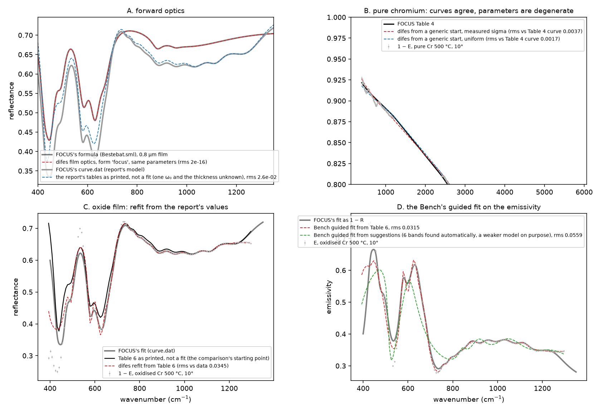

Does difes, used the way Irati used FOCUS, give her results? Four levels, from the exact to the procedural, on the group’s own chromium data.
The question that started this project was whether a tool of our own could do what FOCUS did for the TFG. With Irati's two project files exported from FOCUS (log L039) and the report's tables and curve, the test can now be run end to end: the same spectra, the same models, the same ranges, the same film formula. The script is difes/examples/reproduce_irati.py; every number below comes from one run of it (difes 0.14.0, 1 October 2026).
As documents: difes against FOCUS (PDF, 7 pages), this page and Irati's path condensed for sharing, with the figures and the files used; and difes and FOCUS: where the comparison stands (PDF, 3 pages), the brief for the group's FOCUS expert: what has been checked, what is open, two requests.
A fit program gives three things: the curve it draws for a model, the parameters it stops at, and the way a person reaches them. These are not equally reproducible, and the report itself says so about the second: the second Drude term of chromium “is not entirely sensible”, and the oxide fit “does not reach the 550 \mathrm{cm}^{-1} peak” and “fails at the edges”. So the test is layered:

FOCUS’s project files hold the formulas FOCUS computes. Evaluating them in difes’s math language and comparing with difes’s own sample optics at identical parameters:
| quantity (Bestebat.sml, 400–1350 \(\mathrm{cm}^{-1}\)) | difes form | rms difference |
|---|---|---|
| bare chromium, Fresnel reflectance | — | \(1.5\times10^{-16}\) |
| 0.8 \(\mu\)m incoherent oxide film | focus (eq. 27) |
\(1.7\times10^{-16}\) |
| 0.8 \(\mu\)m incoherent oxide film | energy (default) |
\(8.8\times10^{-3}\), max 0.049 |
The finding of this level is the third row. FOCUS’s incoherent film, the Reflectance-Ei-E1-E2 symbol and eq. 27 of the report, writes the numerator as |(1 - r_1^2)\, r_2\, \tau^2|^2, the product of amplitude transmittances; difes’s default writes (1 - R_1)^2 R_2 A, the energy-conserving intensity form. They coincide when the film’s index is real and differ where the film absorbs, up to 0.05 in the reststrahlen band of \mathrm{Cr_{2}O_{3}}. difes 0.14.0 offers both (form="focus" on the sample, the formula selector of the Bench’s Sample card), so a FOCUS result can be reproduced to machine precision, and the manual’s earlier claim that the two forms agree to better than 1 % is withdrawn for strongly absorbing films.
A second forward check uses the report rather than the files: Table 4 and Table 6 (fourteen Lorentz oscillators, \omega_0 of the fourth not transcribed) on an incoherent film of thickness not stated. Fitting only those two unknowns against FOCUS’s drawn curve of figure 20 (curve.dat):
| film form | \(\omega_0\) of oscillator 4 | thickness | rms vs curve.dat | above 450 \(\mathrm{cm}^{-1}\) |
|---|---|---|---|---|
energy |
625.0 \(\mathrm{cm}^{-1}\) | 1.093 \(\mu\)m | \(9.9\times10^{-3}\) | \(3.7\times10^{-3}\) |
focus |
624.7 \(\mathrm{cm}^{-1}\) | 1.196 \(\mu\)m | \(1.8\times10^{-2}\) | \(1.6\times10^{-2}\) |
The report’s curve is reproduced to the precision of the transcribed parameters by the energy form, not by the form the exported files use. Either the report’s figure was drawn with a different film symbol than the later files, or the fourteen tabulated parameters are rounded in a way that happens to favour the energy form; the 400–450 \mathrm{cm}^{-1} edge, where neither form follows the curve, points to a term below the range.
Settled on 2 October with FOCUS’s own output. Irati exported three curves of Azkena.sml from FOCUS (Azkena-PhysRev_doitzeko.dat, Azkena-oxido.dat, Azkena-teoriko_monokristal.dat, 512 points on 0–1500 \mathrm{cm}^{-1}, seven significant digits). difes evaluates the same definitions from the same file:
| FOCUS export | difes definition | max |\(\Delta\)| | what that is |
|---|---|---|---|
| Azkena-PhysRev_doitzeko | R_PhysRev_doitzeko (the final reflectance) |
\(5.6\times10^{-6}\) (rms \(8.6\times10^{-7}\)) | the seven-digit rounding of the file |
| Azkena-teoriko_monokristal, Azkena-oxido (identical files) | Funtzio_dielektrikoa_PhysRev (\(\varepsilon\) of the single-crystal model) |
\(4.4\times10^{-5}\) relative | the same rounding, on values up to 128 |
Number against number, nothing transcribed, nothing guessed: level A is exact. The comparison is a test of the package and the fifth step of Irati’s path.
The report fits \varepsilon_\infty plus two Drude terms to R = 1 - E of the pure sample at 500 °C and 10°, excluding the 1200–2400 \mathrm{cm}^{-1} dip it attributes to the measurement. On the same 545 points:
| weights | start | rms vs data | rms vs the Table 4 curve | \(\varepsilon_\infty\) | \((\omega_p, \gamma)_1\) | \((\omega_p, \gamma)_2\) |
|---|---|---|---|---|---|---|
| Table 4 itself | 0.0075 | — | 4.86 | (15344, 834) | (26930, 14258) | |
| measured \(\sigma\) | Table 4, Table \(4 \times 0.7,\) generic | 0.0069 | 0.0037 | 42.1 | (30211, 2485) | (\(10^{5}\), 77796) |
| uniform | Table 4, Table \(4 \times 0.7,\) generic | 0.0071 | 0.0017 | 1.00 | (13043, 689) | (51020, \(10^{5}\)) |
| uniform, \(\varepsilon_\infty\) frozen at 4.86 | generic | 0.0071 | — | 4.86 | (17629, 1046) | (82313, \(10^{5}\)) |
Three starting points give the same answer under each weighting, so the fitter converges; its curves lie within 0.002–0.004 of the Table 4 curve, less than the scatter of the data (median \sigma 0.0015, Table 4’s own residual 0.0075); and its residual is lower than Table 4’s. The parameters, however, are not Table 4’s and depend on the weighting, with the second Drude term running to its bounds. A metal’s reflectance near 0.95 fixes the combination of \varepsilon_\infty and the two plasma frequencies, not each of them: the problem is degenerate, as the report’s own remark about the second oscillator says. Reproducing Table 4’s numbers would require Irati’s unrecorded choices (where she stopped, what she held). What difes reproduces is the physical content, the curve, and it does so from any start.
Table 6 on a frozen Table 4 substrate, incoherent film of 1.095 \mum with the FOCUS form, fitted over 390–1300 \mathrm{cm}^{-1} as the report says (118 points):
| weights | start | rms vs data | rms vs curve.dat | \(\varepsilon_\infty\) | \(\omega_0\) shifts rms / max | within their \(\gamma\) |
|---|---|---|---|---|---|---|
| Table 6 as transcribed | 0.074 | 0.026 | 1.87 | — | — | |
| FOCUS's own curve (curve.dat) | 0.046 | — | ||||
| measured \(\sigma\) | Table 6 | 0.035 | 0.028 | 4.0 | 24 / 60 \(\mathrm{cm}^{-1}\) | 14 of 14 |
| measured \(\sigma\) | Table 6, perturbed | 0.032 | 0.028 | 3.3 | 27 / 60 \(\mathrm{cm}^{-1}\) | 13 of 14 |
| uniform | Table 6 | 0.031 | 0.027 | 3.4 | 22 / 44 \(\mathrm{cm}^{-1}\) | 13 of 14 |
| uniform | Table 6, perturbed | 0.031 | 0.027 | 3.4 | 22 / 44 \(\mathrm{cm}^{-1}\) | 13 of 14 |
Read against FOCUS: FOCUS’s own fitted curve sits 0.046 from the data over the range, and Table 6 as transcribed 0.074 (the missing \omega_0, the unknown thickness, and the film form). difes’s refits reach 0.031–0.035, from the report’s values and from a perturbed start alike, and keep thirteen or fourteen of the fourteen oscillators within their own width of the report’s positions. The ones that move are the ones the report flags: the first mode drifts to its bound at 400 \mathrm{cm}^{-1} (the edge the report could not fit; a mode below the range), the broad thirteenth at 1127 \mathrm{cm}^{-1} with \gamma = 495 is replaced by a narrower one, and the last moves to the upper edge. The agreement is where the physics is, in the bands; the disagreement is where the report says its own fit was weak.
The Bench recipes on the emissivity itself, the sequence a user follows: import the spectrum, set the model, choose Film with the frozen chromium underneath and the FOCUS formula, press Guided fit on 390–1300 \mathrm{cm}^{-1}, adopt.
| start | strengths → positions → widths → all (rms in E) | adopted | bands nearest Table 6's 437, 493, 577, 624 |
|---|---|---|---|
| Table 6 | \(0.062 \to 0.032\) \(\to 0.032\) \(\to 0.032\) | 14 terms, \(\varepsilon_\infty\) 3.3; its R is 0.028 from curve.dat | 15, 41, 1, 1 \(\mathrm{cm}^{-1}\) away |
| the Bench's suggestions | \(0.111 \to 0.092\) \(\to 0.056\) \(\to 0.056\) | 6 terms, \(\varepsilon_\infty\) 4.9; its R is 0.037 from curve.dat | 15, 21, 63, 111 \(\mathrm{cm}^{-1}\) away |
From the report’s values the Bench gives the same result as the fitter in C, in four stages a user can watch. From its own suggestions, found in the fit range, it finds six bands and recovers the two strongest (452 and 514 \mathrm{cm}^{-1}) but not the 577 and 624 \mathrm{cm}^{-1} pair or the weak overtones above 700 \mathrm{cm}^{-1}, which the report needed Larbi’s assignments and a hand-built list of fourteen terms to place; a model of that kind is prior knowledge, and the Bench’s Import FOCUS model or the Table 6 example is how it enters.
The roadmap’s phase-4 criterion, “the parameters agree within their uncertainties, or the disagreement is understood and written down”, is met in the second sense for chromium and in the first for the oxide’s bands.